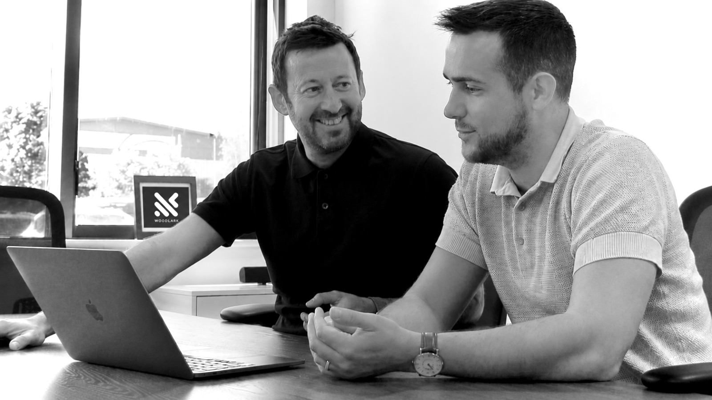

01 · Biography
Trent Peek
Fifteen years in print, packaging and fulfilment — trades where a missed deadline is physical and visible. At CCM Group, rose from business development through Sales Director to Group Managing Director: turnover grown to a projected £12m — 401% on 2017 — headcount tripled, a 12,000 sq ft HQ, and a pandemic pivot that supplied PPE to councils and the NHS.
In late 2021, co-founded We Are Fulfilment with Richard Ardis — a VC-backed e-commerce 3PL. From a standing start: £1.3m, £3.25m, £4.8m revenue over three years, a £6m annualised run-rate by month 21, a 50+ team across two Nottingham fulfilment centres, five institutional funding rounds, and a place on the FEBE Growth 100.
We Are Fulfilment closed in March 2026. The lesson — about governance and instrumented truth — became the foundation of everything since.
Today that means Gardn Labs: a React Native consumer app designed, built and shipped solo — through both app stores, in 20 markets and 13 languages — with the company’s day-to-day operations run by 30+ governed AI agent roles. Roughly 640,000 lines of shipped code and 899 automated test files across three production repos. And a second child arrived this year, which has a way of sharpening what’s worth doing.

02 · The record
2000s – 2021
CCM Group — BDM to Group Managing Director. Projected £12m turnover, 401% growth on 2017, the Trusted PPE consumer brand.
2021 – 26
Co-founded We Are Fulfilment, a VC-backed e-commerce 3PL. £4.8m revenue, 50+ team, five institutional rounds.
2026 —
Founder, Gardn Labs — a 20-market consumer AI app, operated by a governed agent workforce.
Awards
FEBE Growth 100 2024 · Young Leader, East Midlands Leadership Awards 2021 · Entrepreneur of the Year (East Midlands, 2021) · Barclays business accelerator 2023.
Education
BA (Hons) Business Studies, Sheffield Hallam University · co-host, “Business, Interrupted” podcast.
Speed without verification is just being wrong faster.